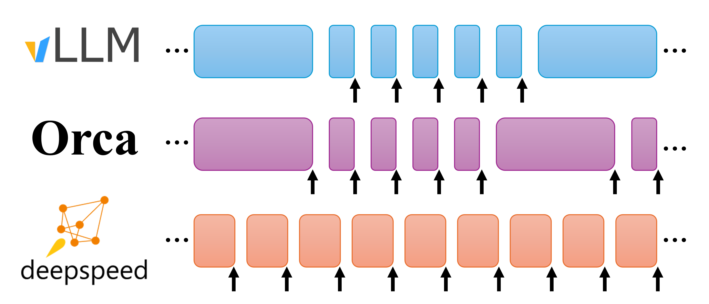
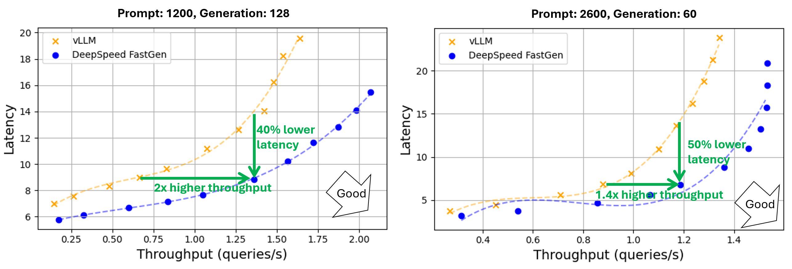

DeepSpeed-FastGen（Microsoft DeepSpeed 技术报告 / arXiv，2024）
技术报告
- DeepSpeed-FastGen: High-throughput Text Generation for LLMs via MII and DeepSpeed-Inference
- Microsoft / DeepSpeed
- arXiv preprint（
arXiv:2401.08671，2024）。 - 价值在于提出并实现了有影响力的 token composition 机制。它决定每次 forward 中放入多少 Prefill token、多少 Decode token。
Continuous Batching 之后，为什么仍会卡顿？
Orca 的 iteration-level scheduling 解决了请求能否在每轮动态进入、退出的问题，但没有保证每个 iteration 的计算量稳定。
假设当前有 32 个请求正在 Decode，每个请求本轮只需要生成 1 个 token；此时新到达一个 2,600-token Prompt。如果系统一次执行完整 Prefill；这一轮会显著拉长正在生成请求的 TBT，用户表现为输出突然停顿。如果始终优先执行 Decode，虽然 TBT 稳定，但新 Prompt 会长时间排队，TTFT 增大。
所以论文要解决的是：
在 continuous batching 中，怎样组合 Prefill 和 Decode，使每个 forward 的 token 工作量较稳定，同时兼顾吞吐、TTFT 和生成阶段的尾延迟？
Key Insight
- 一次 forward 的 latency 主要由本轮处理的总 token 数决定。 相比有多少条请求，Linear 等主要算子更关心这一轮一共处理多少 token。
- Forward token 太少时 GPU 没有吃满。 增加 token 数会提高 GPU 利用率和吞吐；达到饱和区后，再增加 token 只会增加该轮 latency，吞吐不再明显增长。
- 每轮 token 数忽大忽小会造成吞吐和延迟波动。 因此应把每次 forward 控制在接近目标 token budget 的大小。
Token budget : 一次模型 forward 最多安排多少 token。
Core design：Dynamic SplitFuse
- Split：把长 Prompt 拆成多个较小 Prefill chunk，分散到多个 iteration。
- Fuse：把 Prefill chunk、短 Prompt 和已有 Decode token 组合到同一个 forward，尽量填满固定 token budget。

图中每个方块表示一次 forward，方块宽度可以理解为本轮 token 工作量：
- vLLM：一次 forward 主要执行 generation（decode） 或 prompt processing（prefill）；generation 会优先于 prompt，forward 大小变化明显。
- Orca：可以把 Prompt 与 Decode 放在一起，但使用完整 Prompt；长 Prompt 会让某个 iteration 特别长。
- Dynamic SplitFuse：将 Prompt 切块，并与 Decode 组合，短prompt就自行组合，使橙色 forward 大小更加稳定。
分析
- Forward token 数接近 GPU 高吞吐区，减少小 batch 造成的低利用率。
- 长 Prompt 不再形成一个极慢 iteration，正在 Decode 的请求更稳定地收到 token。
- Prompt 不会因 Decode 永久优先而完全饿死，每轮都可以逐块推进。
Experiment
| 项目 | 设置 |
|---|---|
| 主要模型 | Llama-2 70B |
| 主要硬件 | 4×NVIDIA A100 80GB，Tensor Parallel=4 |
| 其他模型/硬件 | Llama-2 13B/单 A100 80GB；Llama-2 70B/8×H100；Llama-2 7B/A6000 |
| Baseline | 论文实验时的 vLLM 版本 |
| Prompt 长度 | 均值 1,200 或 2,600 token |
| Output 长度 | 均值 60 或 128 token |
| 长度分布 | 正态分布 |
| 负载变化 | 改变并发客户端数量，绘制 throughput-latency 曲线 |
| 主要指标 | Request throughput、端到端 latency、effective throughput、P50/P90/P95 per-token generation latency |
结果

图的横轴是 throughput（queries/s）；纵轴是 latency。
在Prompt 均值 2,600、Output 均值 60 的配置中：
| 点 | vLLM | DeepSpeed-FastGen | 结论 |
|---|---|---|---|
| 吞吐约 1.2 req/s 时 | latency 14 s | latency 7 s | 同吞吐下 latency 约降低 50% |
| latency 约 9 s 时 | throughput 0.67 req/s | throughput 1.36 req/s | 同延迟下 throughput 约 2× |
整体报告：
- 最高约 2.3× effective throughput；
- 平均 latency 最多约降低 2×；
- P95 per-token generation latency 最多降低 3.7×；
- 16 个 replica 从单 replica 约 1.46 queries/s 扩展到约 23.7 queries/s，接近线性扩展。
Effective throughput 不是不考虑延迟的原始吞吐，而是同时满足首 token latency 和 generation rate SLA 的有效请求吞吐。
一些点
可以保留 Dynamic SplitFuse 的 token composition，把固定 token budget 扩展为 DAG/SLO-aware 动态预算调度：
关键路径 Decode 接近 TBT deadline → 减小本轮 Prefill chunk，优先稳定 Decode
GPU 当前低并发、没有紧急 Decode → 增大 Prefill chunk，尽快完成关键 Agent 的 Prompt
某个 Prefill 完成后会解锁多个下游 Agent → 在相同预算内提高其优先级